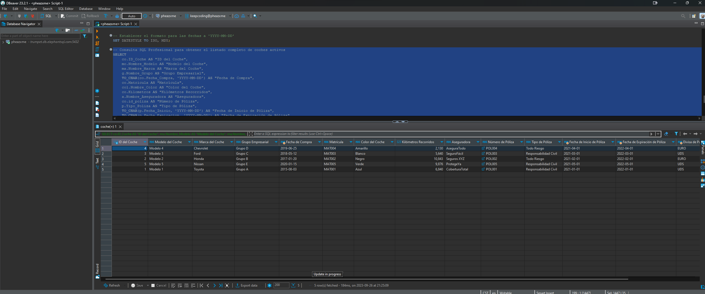

Esta sección destaca algunos de los proyectos de base de datos que he realizado utilizando MySQL.
Este proyecto se centra en la gestión eficiente de la flota de vehículos de KeepCoding. Mediante la implementación de un sistema de base de datos en PostgreSQL, se busca tener un control completo sobre diversos aspectos de la flota, como modelos de vehículos, marcas, grupos empresariales y más. Además, se abarcan detalles como el color del coche, matrícula, kilómetros recorridos y datos de la aseguradora. Un aspecto clave es el seguimiento de las revisiones de cada vehículo, incluyendo la fecha, kilómetros al momento y costos. El proyecto incluye un script SQL autónomo para crear y poblar la base de datos, así como archivos CSV de ejemplo para pruebas.
Tecnologías utilizadas: MySQL
Ver Código Descripción corta del proyecto.
Tecnologías utilizadas: PostgreSQL, Python
Ver Código